충남대학교 컴퓨터공학과 조은선 교수님의 "컴파일러 개론" 강의를 필기한 내용입니다.
다소 잘못된 내용과 구어적 표현 이 포함되어 있을 수 있습니다.
LL 문법
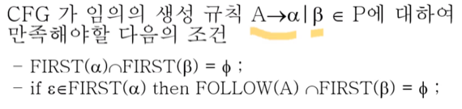
- 일단 위의 정의는 LL 조건이라고 부른다.
- 그리고 저 |가 ß에만 묶여있는거다 - a | ß라는 소리 - 헷갈리지 말 것
- 어떤 문법이 모든 생성규칙에 대해 LL 조건을 만족하면 그 문법을 LL 문법이라고 한다
- 또한 LL 문법에 속하는 문법은 LL 파싱이 가능하다
- 즉, 모든 생성규칙이 LL 조건을 만족하면 왼쪽에서 오른쪽으로 파싱했을 때 결정적으로 좌파스가 나오게 된다는 소리이다.
- 따라서 LL 파싱은 모든 생성규칙에 대해 LL 조건을 만족하는 깔끔한 LL 문법에 대하서만 파싱한다.
- 저 조건을 좀만 생각해보면 당연한 말이다
- 일단 FIRST(a)와 FIRST(ß)는 교집합이 없어야 한다 - 만약 교집합이 있으면 그 교집합에 속하는 놈이 튀어나왔을 때 A → a를 선택해야 할 지, A → ß를 선택해야할 지 알 수 없기 때문
- 그리고 a가 널이 될 수도 있으면, FIRST(A)에는 FOLLOW(A)도 포함되기 때문에 FOLLOW(A)와 FIRST(ß)도 교집합이 있으면 안된다 (위와 비슷한 이유)
- 만약 교집합이 있으면, a가 널이 되고 A다음에 올 수 있는 놈들이랑 ß가 될 수 있는 놈들이랑의 교집합이 있다는 소리이고 그럼 교집합에 속하는 놈이 들어왔을 때 어떤 놈으로 생성규칙을 선택해야 할 지 모르기 때문
- 그리고 LL(1) 문법이라는게 있는데 여기에서 (1) 은 뭔소리냐면 토큰 하나만 보고 생성규칙을 선택하겠다 뜻이다
- 즉, LL(1)문법은 토큰이 하나 들어왔을 때, 그 토큰 하나만 가지고 생성규칙을 고르는 것이 가능해야된다든 것
- 다음과 같은 경우에는 절대로 LL(1) 문법이 될 수 없다
- Ambiguous한 문법일 경우
- Left-factoring이 가능한 부분이 존재하거나
- Left-recursive한 경우
- 저게 뭔지는 이제 배운다
- 일반 문법을 LL문법으로 바꿔주는 알고리즘은 아직 발견하지 못했기 때문에 위와 같은 문제점이 있었다면 하나씩 해결해주며 LL이 맞는지 테스트해본다
Left Factoring
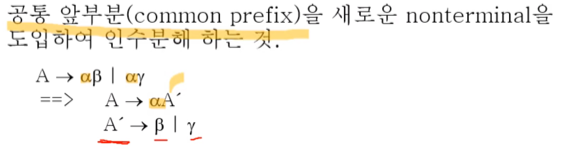
- 뭐 간단하다
- 생성규칙의 앞부분에 공통되는놈이 있으면 그걸 묶고 그 다음에 올 것을 또 하나의 Non-terminal을 도입해서 표현하는 법
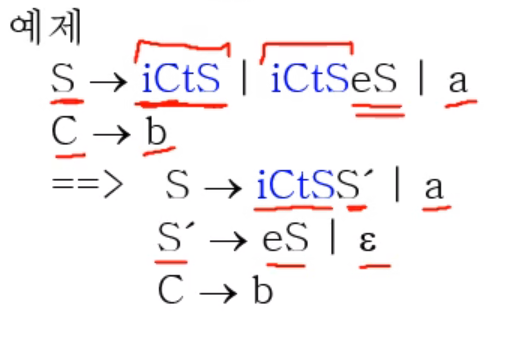
- 간단맨
- 어쨋든 Left Factoring을 해결해주면 LL(1) 문법이 될 가능성이 높아진다
Left Recursion
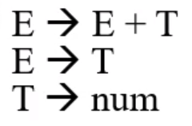
- 이런놈이 Left Recursion이다
- 즉, LHS가 RHS의 앞부분에 재귀적으로 등장하는 경우 - 좌측 결합법칙을 도입하면 무조건 생기게 되더라
- 위의 경우에는 뭐가 문제냐
- 아래의 예시를 보면 알 수 있다
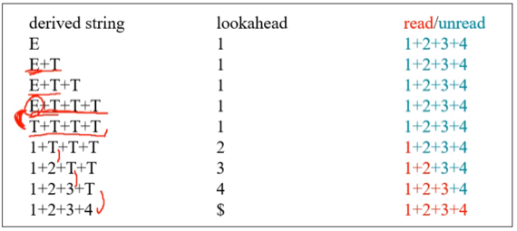
- E + T + T + T까지는 1번 생성규칙으로 생성해나가다가
- 그 다음 T + T + T + T는 2번 생성규칙을 선택해야 되는데 그걸 컴퓨터가 알 방법이 없다
- 따라서 다시 1번을 선택하게 되고 그렇게 쭉 나가다가 결국에는 무한루프에 걸리게 되는 것
- 즉, Deterministic하지 않다
- 따라서 Left recursive하면 절대로 LL(1) 문법이 될 수 없는 것
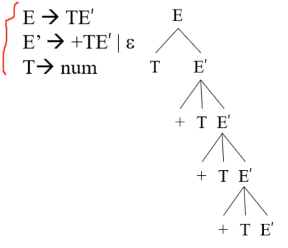
- 위에서 보는거처럼 Right recursive하게 해주고 LL 조건에 맞게 수정해주면 해결이 가능하다
- 해결하는 과정을 약간 공식화하면 아래와 같다
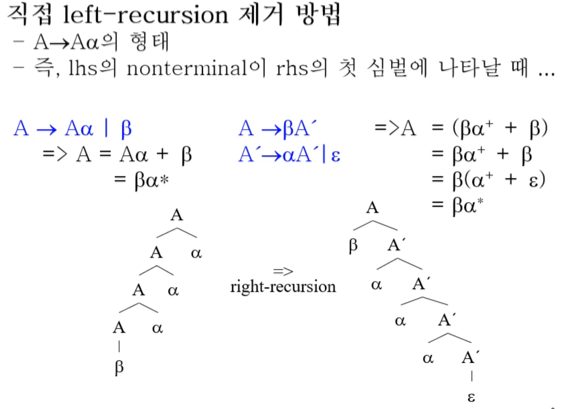
- 위의 그림에서 파란색이 변환결과고 검은색 수식이 이 두개가 같다는 것을 증명한 것
- 약간 공식처럼 하려면 이렇게 해라
- Left-recursion을 제외한 모든 부분을 a로 묶는다
- <| 뒤에 나오는 놈 + 새로운 Non-terminal>형식으로 첫번째 생성규칙을 완성 한다
- 그리고 <a로 묶은놈 + left recursive 했던놈 | 널>형식으로 두번째 생성규칙을 완성한다
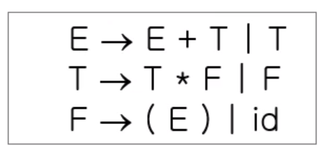
- 위 그림은 예제
- 그리고 간접 Left recursive라는 것도 있다
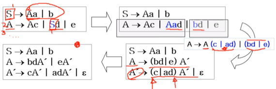
- 위 그림의 왼쪽 위와 같은 경우인데
- 일단 이걸 파악하는 것은 Non-terminal을 위에서부터 순서를 매기고 RHS에 LHS보다 작은놈이 나오는지 검사하는 식으로 진행해주면 된다
- 이걸 해결하는 방법은
- 오른쪽 위에처럼 순서가 작은놈의 RHS을 문제가 생긴 부분에 전부 copy해준다 - 위의 예제에서는 S가 |로 묶여있기때문에 d를 분배법칙마냥 붙여줌
- Left Factoring을 해준다
- Left recursive를 해결해준다
- 마지막으로 Left factoring할 때 임시적으로 괄호를 썻다면 그 괄호는 우리가 붙여준 것이기 때문에 분배법칙으로 풀어준다
LOOKAHEAD
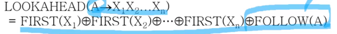
- 이놈은 이제
- 생성규칙의 RHS에 대한 FIRST라고 생각하면 된다
- 즉, 어떤 생성규칙을 적용했을 때 가장 먼저 나올 수 있는 terminal symbol들의 집합인거임
- 그래서 보면 저 모든 X들에 대한 FIRST들을 전부 ringsum해주고 마지막으로 LHS인 A의 FOLLOW까지 ringsum해주는 것을 알 수 있다
- 즉, 마지막으로 드가는 FOLLOW(A)는 앞에꺼가 전부 null일때 의미가 있는 셈
Strong LL
- LL 조건에는 두가지가 있었던 것을 위에서 배운 LOOKAHEAD를 통해 하나로 합친 것을 Strong LL이라고 한다
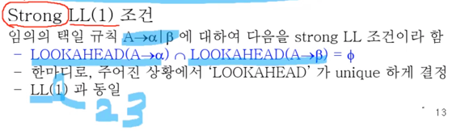
- 정의는 위와 같다
- (1) 일때는 LL(1)과 Strong LL(1)이 동일하다 - 두 문법이 동치인 셈
- 하지만 (1) 가 아닐때는 LL과 Strong LL은 동일하지 않을 수도 있다
예제
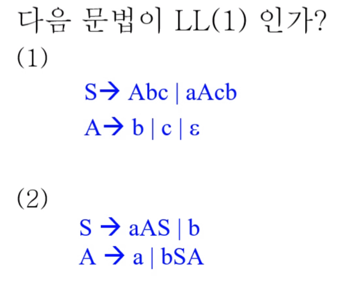